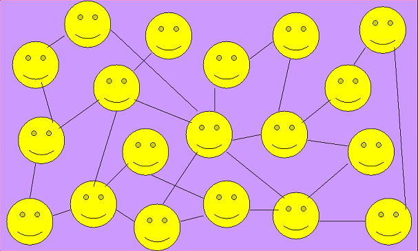

Социальная сеть - это платформа, онлайн-сервис или веб-сайт, предназначенные для построения, отражения и организации социальных взаимоотношений в сети Интернет.
Появление сети Интернет и Всемирной Паутины оказало большое влияние на социальные взаимодействия людей во всём мире.
Первые попытки создания социальных сетей начали происходить в середине 90-х годов.
К таким проектам можно отнести Theglobe.com, Geocities, Tripod.com, Classmates.com
Многие из этих первых проектов главным образом концентрировались на объединении людей через организацию общих чатов, и подталкивали и поощряли людей к распространению личной информации о себе.
К концу 90-х всё это пришло к концепции личной Интернет страницы пользователя. Каждый участник сети имел свою личную страницу, на которой мог выкладывать любую информацию и делиться идеями. Также пользователь имел список друзей и личную анкету, содержащую подробную информацию о себе, для того, чтобы можно было искать других людей для общения и знакомств по заданию интересующих характеристик, например, пола, страны, возраста и т.д.
В 2000-х стали появляться другие, более специализированные на ведении дневников, размещении фотографий и ведении блогов, социальные сети.
Такие как OpenDiary, HubCulture, Cyworld, MySpace, LinkedIn и много других.
Интересно, что Facebook появился довольно поздно, в 2004 году, и начинал развиваться вообще как проект для ведения учётных записей внутри Гарвардского Университета.
Он сразу завоевал огромную популярность году и к 2005 году уже была распространён по большинству государственных университетов США.
И только в 2006 году Facebook стал открыт для любых пользователей, без привязки к каким-либо университетам.
К 2009 году Facebook стал самой популярной социальной сетью в мире.
Социальная сеть ВКонтакте появилась в 2006 году, как клон американского Facebook. В первое время также позиционировала себя как инструмент для взаимодействий студентов, но потом сбросила эти рамки, как и Facebook, став главным современным способом общения и взаимодействия людей в сети.
По данным на 2017 год ВКонтакте занимал 7 место в списке самых популярных сайтов мира.
На текущий момент самыми популярными являются:
Все эти социальные сети разные, нацелены на разные группы аудиторий, и могут отличаться как принципами социального взаимодействия, так и просто типом контента, который на них размещается.
Facebook и ВКонтакте - социальные сети общего назначения, с самым богатым набором возможностей.
Youtube - специализирована на видеозаписях и ведении видео-блогов.
Instagram - специализирована на фото, ведении дневника через фотографии своей жизни и сохранении важных моментов посредством фото.
Twitter - основана на ведении микро-блогов, так называемых "твитов". Это короткие текстовые записи, обычно, с 1 изображением.
Одноклассники сформировались как социальная сеть для людей старшего поколения в России.
Reddit - специализирован на форумах. Когда человек может опубликовать тему, и любые пользователи присоединяются к её обсуждению.
LinkedIn - социальная сеть для поиска и установления деловых контактов.
В основе любой социальной сети лежит персональная страница пользователя. У каждого пользователя своя собственная страница, на которой он размещает содержимое, какое захочет.
Текстовые записи, фото, видео, музыку, любые типы информации.
И любой другой человек, зайдя на страницу пользователя, может увидеть все его материалы, оценить и выразить свое мнение и отношение к ним. Для этого существуют разные механизмы, такие как оценка (лайки/дизлайки), или комментарии.
Большинство социальных сетей подталкивает пользователей заводить новые знакомства, больше общаться и проводить всяческие коммуникации, на то они и социальные.
Почти везде у пользователей есть список друзей, или контактов, - круг лиц, с которыми человек больше всех общается, и с кем он хочет делиться своей информацией.
Обычно, пользователю приходят уведомления, если кто-то из его друзей/контактов совершает какое-то действие, например публикует какую-нибудь запись на своей странице.
Существует такое понятие, как лента - список всех записей и публикаций ваших контактов распределённых по временной оси.
Многие социальные сети позволяют пользователям объединятся в сообщества - группы людей, связанных общими целями или общими интересами.
Распространяя контент в таких сообществах, его будут видеть все его участники.
Например, группа любителей автомобилей Toyota. Группа любителей котиков. Группа политической оппозиции. Группа студентов какого-то вуза. И т.д.
Социальные сети могут послужить источником потери конфиденциальных данных, распространения спама, потери личной информации, создания негативного имиджа человека, интернет-зависимости.
Интернет-зависимости от социальных сетей сильно подвержена современная молодёжь.
Многие люди не понимают, что информация, размещённая ими в социальных сетях, может быть найдена и использована кем угодно, не обязательно с благими намерениями. Информацию об участниках социальных сетей могут найти их работодатели, родственники, сборщики долгов, преступники и так далее.
Также, если в социальной сети была сделана какая-то запись, её уже нельзя будет безвозвратно удалить.
Поэтому всегда важно обдумывать, что вы публикуете. Воздерживаться от злословия, экстремистских высказываний и публикации слишком личной информации.
Во многих социальных сетях аккаунты пользователей являются публичными, что приводит к ещё большим опасностям, ведь любой недоброжелатель может с вами связаться и попытаться обмануть или ещё что похуже.
Не редки попытки вымогательств, угроз, шантажа. Не все пользователи являются теми, кем себя описывают: какая-нибудь красивая Аллочка может на самом деле быть толстым бородатым Анатолием.
В социальных сетях лучше не общаться с подозрительными людьми, а только с теми, с кем вы знакомы в реальной жизни (и то, всегда сначала проверяя, что это их настоящий аккаунт), или с теми, кого вам порекомендовали ваши знакомые.
Также в последнее время в таких социальных сетях, как Facebook и ВКонтакте, начало появляться множество вымышленных новостей, замаскированных под настоящие. Существуют целые новостные сообщества, которые распространяют между участниками эти выдуманные новости, которые затем, от человека к человеку, распространяются по всему Интернету.